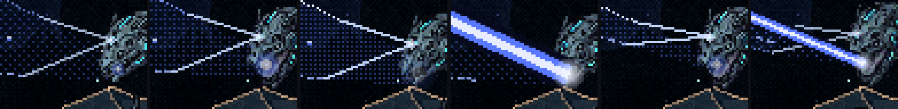
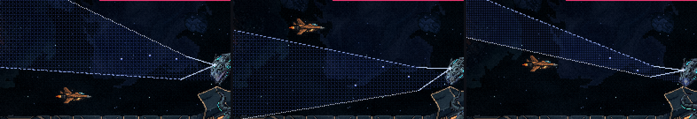
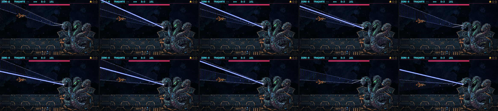
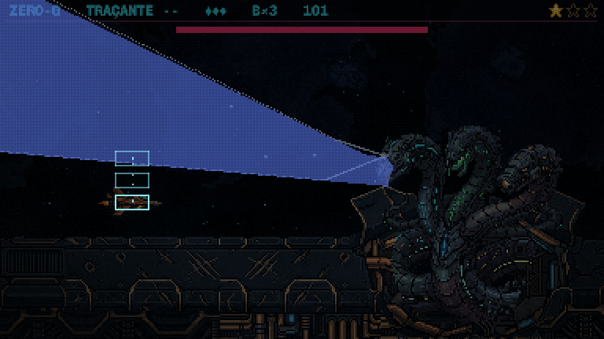
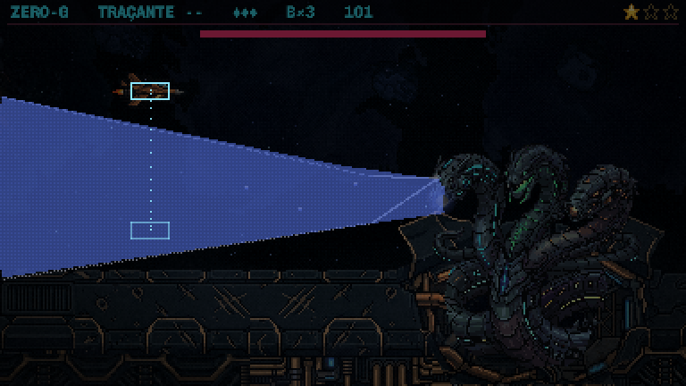

A Serpente: o raio-x no olho e a salva
01/11/2026 · rodada 9 das habilidades (o raio da azul) · nada foi commitado.
O que você disse sobre a raio-varredura.html:
- "Gostei do estilo: o raio-x pode sair dos olhos da serpente, o raio sai da boca."
- "No último raio vai acontecer uma salva de raios mais rápidos, a varredura vai ser mais rápida também [...] Em diferentes locais, vai durar mais segundos que o raio 3, mas vai ser divertido desviar de muitos seguidos."
- "O raio, consequentemente, vai cortar o cenário com menos largura."
Depois você escolheu que os lugares da salva são sorteados a cada luta, com uma regra que garante a saída.
O que mudou:
- O aviso sai do olho da azul. O olho brilha e solta dois feixes finos que acendem as linhas da fatia, e o raio continua saindo da boca.
- O terceiro raio virou a salva: seis raios finos, cada um numa fatia estreita, um atrás do outro.
- Os dois primeiros (a fatia de cima e a de baixo) continuam iguais.
O raio-x no olho
- O olho da frente da azul fica uns 13 px acima da boca. Na carga, ele acende e solta dois feixes finos que vão até onde começam as duas linhas da fatia. Ela mira com o olho e atira com a boca.
- A fatia desenhada é exatamente onde o raio vai passar, contando a largura dele. Tentei primeiro girar a fatia inteira no olho, mas, para cobrir o raio de verdade perto da cabeça, ela abria tanto na borda da tela que a fatia estreita da salva virava meia tela. Com os feixes do olho indo até as linhas, o aviso fica exato e o estilo fica o seu.


A salva
- Seis raios finos, com a metade da largura dos outros (6 px). Cada um varre uma fatia estreita em 0,3 s, e sai um a cada 0,7 s.
- O aviso do próximo raio já aparece enquanto o atual dispara, então o jogador sempre vê um raio à frente.
- A primeira carga é mais longa (1 s), para anunciar a salva. Ela inteira dura uns 4,5 s; o terceiro raio antigo durava 3,5 s.
- Sorteada a cada luta, com uma regra: cada fatia cobre o lugar onde a nave está, então é preciso se mexer. A saída fica a no máximo 25 px, o que a nave percorre em 0,23 s, menos que os 0,34 s entre o fim de um raio e o disparo do próximo. A saída nunca sai da tela; o lado da saída e o sentido da varredura são sorteados.



Ela continua no idle. Na animação, a cabeça da azul gira acompanhando cada raio; na salva, ela vira rápido de um alvo para o outro. O desenho do raio continua provisório.
Medido quadro a quadro:
- O aviso é exato: nenhum ponto do raio passou fora da fatia desenhada.
- A regra se sustenta: em quatro sorteios diferentes, a nave sempre escapou dos seis raios, sem nenhum toque. A nave do teste para bem na saída, com 4 a 5 px de folga, e dá para ir mais longe.
- Parada no mesmo lugar, a nave é atingida na salva em todos os casos.
Para você decidir
- O raio-x no olho: lê como ela mirando com o olho e atirando com a boca?
- O ritmo da salva: um raio a cada 0,7 s, com saídas de até 25 px, está divertido? Ou apertado, ou folgado demais?
- O raio fino da salva (6 px, metade do normal) está na largura que você imaginou?